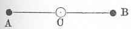

Kant: AA XIV, Physik und Chemie. , Seite 463 |
|||||||
Zeile:
|
Text:
|
|
|
||||
| 01 | durch beyder Einflüsse erklaren. Also bleibt eine Bewegung respectiv auf | ||||||
| 02 | den absoluten Raum, die andere ist Bewegung des relativen Raums selber, | ||||||
| 03 | und so sind beyde in der Diagonale wirklich beyde Bewegungen, nicht | ||||||
| 04 | bloß ihre Richtung zusammen vereinigt, welches durch die wirkung der | ||||||
| 05 | Krafte auf einander in einem ruhenden Raum nicht könnte geschlossen | ||||||
| 06 | werden. | ||||||
| 07 | Wenn ein Punct in zwey entgegengesetzten Richtungen mit derselben | ||||||
| 08 | Kraft bewegt wird, so bleibt er in Ruhe. Dieses kan zwar daraus geschlossen | ||||||
| 09 | werden, weil er sonst in zwey Orten zugleich seyn würde; aber | ||||||
| 10 | das zeigt nicht, wie diese beyde Kräfte ent durch Gegenwirkung die Beharrlichkeit | ||||||
| 11 | an demselben Orte verursachen. Die Wirkungen können nur | ||||||
| 12 | durch oder Krafte müssen jederzeit (und so auch im motu composito, und | ||||||
| 13 | zwar beym Zuge oder stoß oder Druk) durch wirkliche Bewegungen ausgedrükt | ||||||
| 14 | werden. | ||||||
| 15 |  Der Korper C werde nach C A bewegt (g in Ansehung |
||||||
| 16 | des absoluten Raums ) nun kann. Wenn ich annehme, er werde zugleich | ||||||
| 17 | nach C B bewegt, so kann ich an dessen Statt annehmen, der Raum bewege | ||||||
| 18 | sich mit ihm von B nach C oder (g von ) C nach A; wenn aber der Raum | ||||||
| 19 | sich mit dem Korper in derselben Linie mit derselben Geschwindigkeit | ||||||
| 20 | bewegt, so ruht der Korper. | ||||||
| 21 | Der absolute Raum ist bl also blos die Idee, die Wirkungen aus | ||||||
| 22 | ihren Kraften unabhangig vom relativen Raum und doch in ihm zu be | ||||||
| 23 | abzuleiten. | ||||||
| 24 | Es ist eben so, als wenn man ohne eine besondere Kraft der Undurchdringlichkeit | ||||||
| 25 | zum Grunde zu legen (g oder sie a priori zu demonstriren ), | ||||||
| 26 | sagen wolte: ein Korper Ding kann dem andern nicht mit einem | ||||||
| [ Seite 462 ] [ Seite 464 ] [ Inhaltsverzeichnis ] |
|||||||
;){kind=link}